Brand Content
기업 홍보 · 제품 · 서비스 소개 · 호텔 · 공간 · 기관 · 대학
VIDEO PRODUCTION · DIRECTING
기획부터 촬영, 조명, 드론, 편집, 색보정까지.하나의 디렉팅으로 처음부터 끝까지 톤을 이어갑니다.기획부터 촬영, 조명, 드론, 편집, 색보정까지.하나의 디렉팅으로 처음부터 끝까지 톤을 이어갑니다.
Matthew Creative는 한 명의 디렉터가 프로젝트의 중심을 잡고, 규모와 목적에 맞춰 필요한 역할을 유연하게 구성합니다.중간 전달을 줄이고, 결정은 빠르게, 결과물의 톤은 끝까지 일관되게 가져갑니다. Matthew Creative는 한 명의 디렉터가 프로젝트의중심을 잡고, 규모와 목적에 맞춰 필요한 역할을유연하게 구성합니다.중간 전달을 줄이고, 결정은 빠르게,결과물의 톤은 끝까지 일관되게 가져갑니다.

DIRECTOR · OH SE YOUNG
영화적 시선과 현장 경험을 기반으로, 브랜드와 프로젝트의 목적에 맞는 영상을기획부터 완성까지 직접 설계합니다. 영화적 시선과 현장 경험을 기반으로,브랜드와 프로젝트의 목적에 맞는 영상을기획부터 완성까지 직접 설계합니다.
서울예술대학교 영화과 졸업
영화·TV CF 촬영팀 → 영상 제작 전 공정 수행
기획 · 연출 · 촬영 · 조명 · 드론 · 편집 · 색보정
02 · SERVICES
장르를 나열하기보다, 클라이언트가 영상을 사용하는 목적에서 출발합니다. 장르를 나열하기보다, 클라이언트가 영상을사용하는 목적에서 출발합니다.
기업 홍보 · 제품 · 서비스 소개 · 호텔 · 공간 · 기관 · 대학
유튜브 · 숏폼 · 인터뷰 · SNS 캠페인 · 정기 콘텐츠
다큐멘터리 · 드라마타이즈 · 뮤직비디오 · 시네마틱 브랜드 필름
03 · SELECTED WORKS
교육·기관, 브랜드, 스포츠, 공연과 뮤직 콘텐츠까지.최근 작업의 실제 프레임을 중심으로 구성했습니다. 교육·기관, 브랜드, 스포츠, 공연과 뮤직 콘텐츠까지.최근 작업의 실제 프레임을 중심으로 구성했습니다.
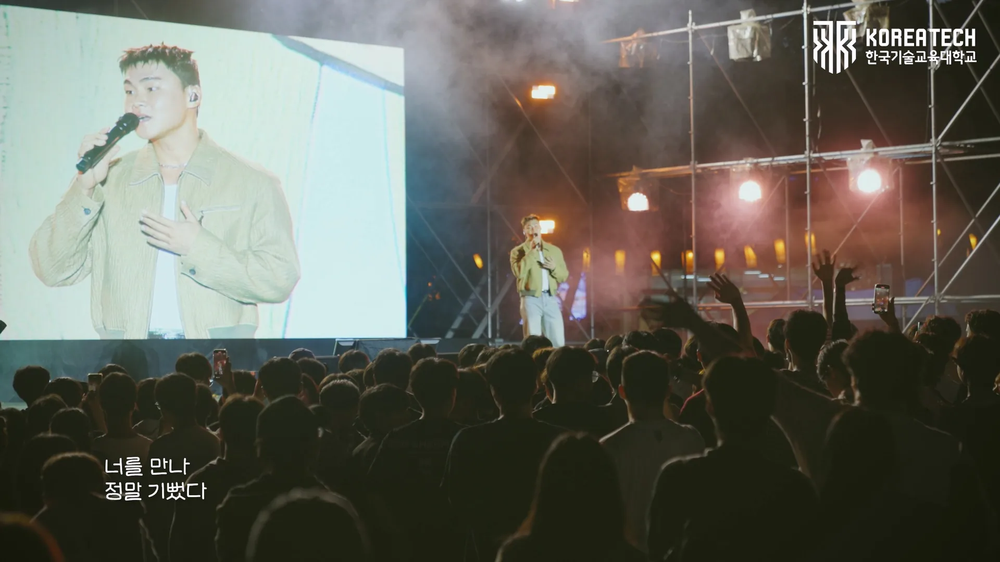
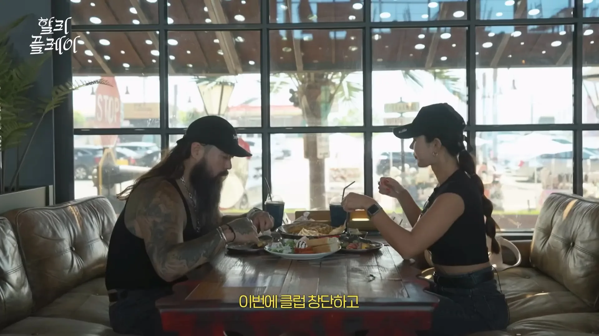
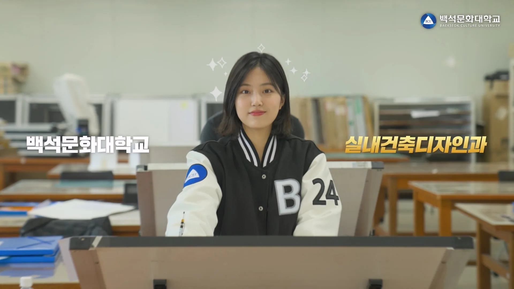
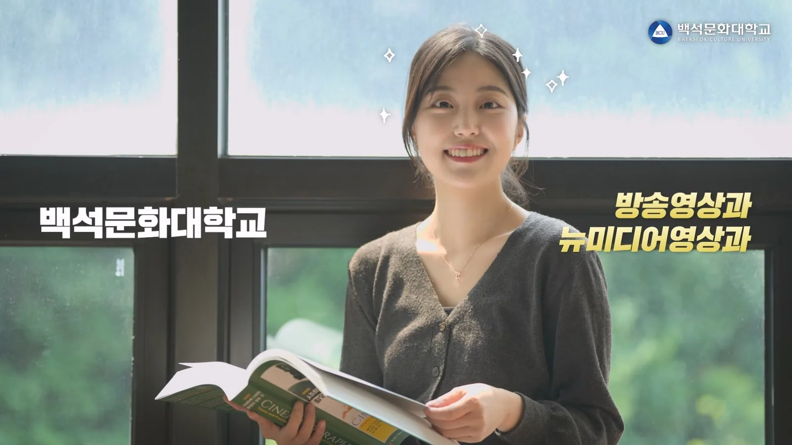
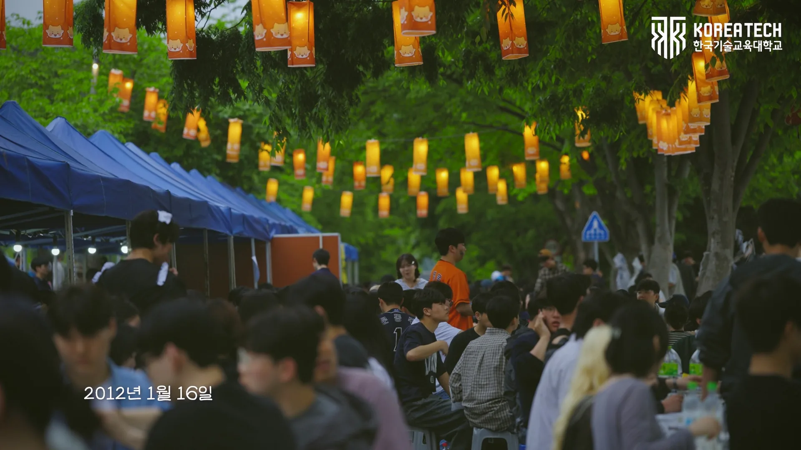
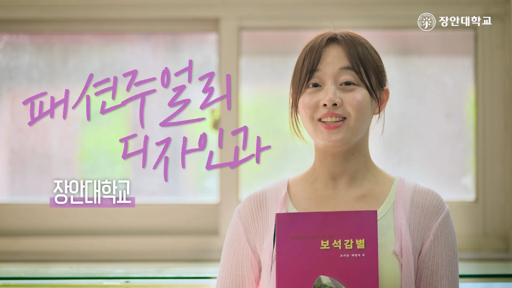
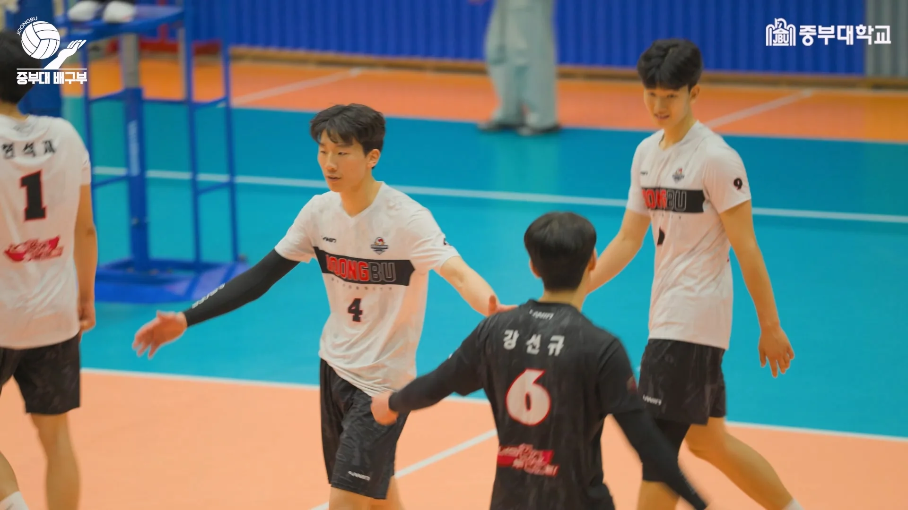
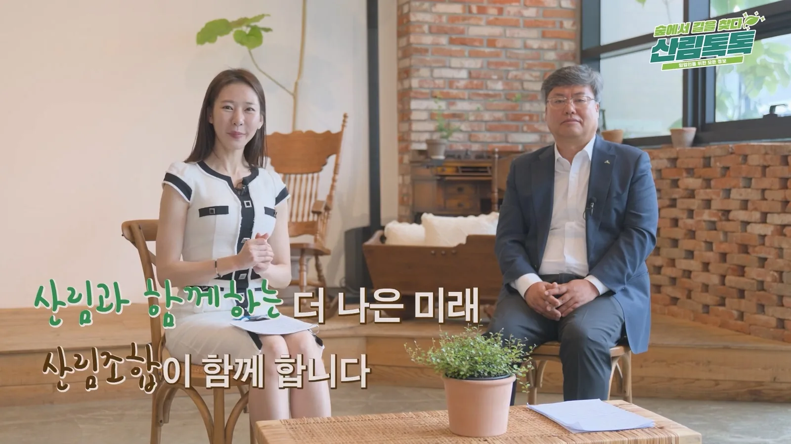
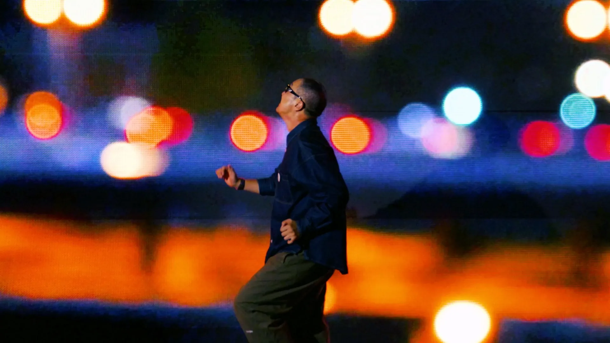
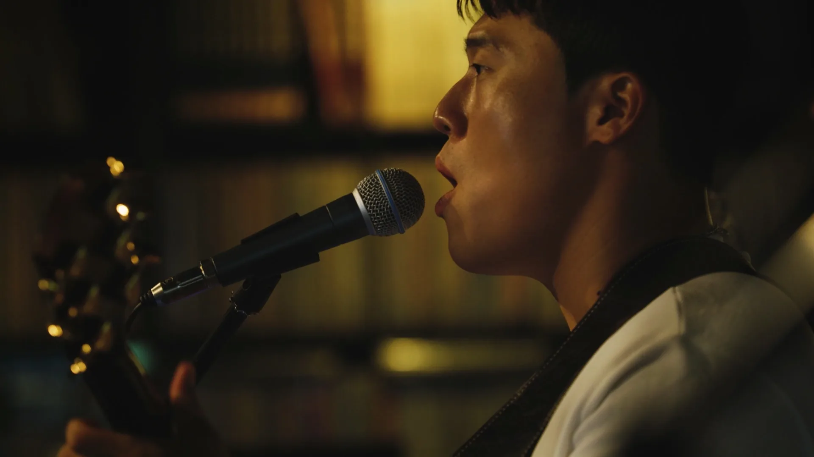
04 · SHOWREEL
기획부터 촬영, 조명, 드론, 편집까지
모든 과정을 하나의 쇼릴에 담았습니다.
저의 시선과 방식, 결과를 확인해보세요.
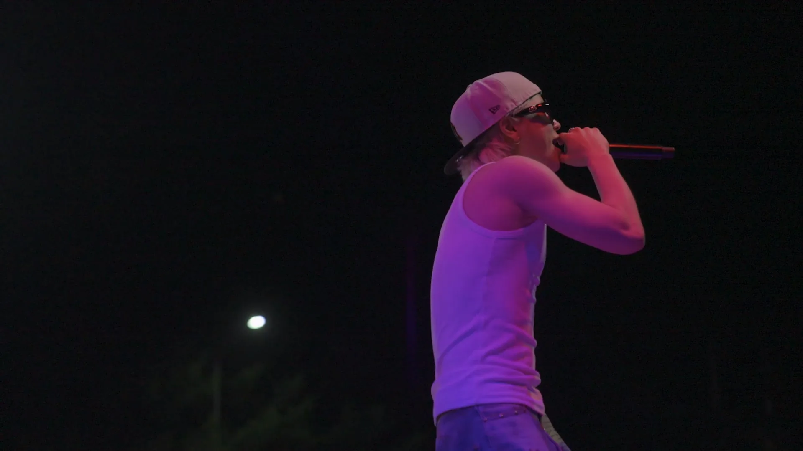
▶05 · PROCESS
한 명의 디렉터가 전 과정을 이해하기 때문에수정 방향은 빠르고 결과물의 톤은 끝까지 이어집니다. 한 명의 디렉터가 전 과정을 이해하기 때문에수정 방향은 빠르고 결과물의 톤은 끝까지 이어집니다.
목적 · 타깃 · 예산 · 일정 정리
구성 · 콘티 · 로케이션 · 제작 설계
촬영 · 인터뷰 · 현장 디렉팅
필요한 시각 요소와 항공 촬영 결합
편집 · 사운드 · 그래픽
색보정 · 최종 검수 · 납품
06 · FLEXIBLE PRODUCTION
소규모 프로젝트는 직접, 규모가 커지면 검증된 전문 인력을 결합합니다.고정비보다 결과물에 필요한 리소스에 집중합니다. 소규모 프로젝트는 직접, 규모가 커지면검증된 전문 인력을 결합합니다.고정비보다 결과물에 필요한리소스에 집중합니다.
빠른 납품과 효율이 중요한 프로젝트
조명 · 음향 · 서브 촬영 · 후반 등 필요 파트 확장조명 · 음향 · 서브 촬영 · 후반 등필요 파트 확장
팀이 커져도 방향과 결과물의 톤은 하나로
07 · EXPERIENCE
장비 관리, 데이터, 포커스 등 현장 실무 경험
기획 · 연출 · 촬영 · 조명 · 편집 · 색보정
호텔 · 기업 · 제품 · 기관 콘텐츠
다큐멘터리, 교육, 문화·기관 프로젝트 다수
SELECTED RECOGNITION
〈멜로영화〉 촬영 · 조명 / 경쟁부문 진출
〈나그네〉 촬영
〈토요일 밤, 일요일 아침〉 촬영 · 조명
〈no reply〉 촬영 · 조명
〈인질의 극〉 촬영 · 조명 / 장편경쟁부문 진출
〈단팥죽〉 촬영 / 뉴질랜드 ‘Korean Focus’ 부문 상영작 선정
〈단팥죽〉 촬영 / 본선진출
LET'S MAKE SOMETHING
프로젝트의 목적, 일정, 예산을 알려주시면가장 효율적인 제작 방식부터 함께 정리하겠습니다. 프로젝트의 목적, 일정, 예산을 알려주시면가장 효율적인 제작 방식부터 함께 정리하겠습니다.